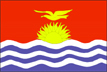

{kind=link}


![[Country map of Kiribati]](../maps/kr-map.jpg)
| Kiribati |  |
|
| | |
| Introduction |
Background: The Gilbert Islands were granted self-rule by the UK in 1971 and complete independence in 1979 under the new name of Kiribati. The US relinquished all claims to the sparsely inhabited Phoenix and Line Island groups in a 1979 treaty of friendship with Kiribati.
| Geography |
Location: Oceania, group of islands in the Pacific Ocean, straddling the equator, about one-half of the way from Hawaii to Australia; note - on 1 January 1995, Kiribati unilaterally moved the International Date Line from the middle of the country to include its easternmost islands and make it the same day throughout the country
Geographic coordinates: 1 25 N, 173 00 E
Map references: Oceania
Area:
total:
717 sq km
land:
717 sq km
water:
0 sq km
note:
includes three island groups - Gilbert Islands, Line Islands, Phoenix Islands
Area - comparative: four times the size of Washington, DC
Land boundaries: 0 km
Coastline: 1,143 km
Maritime claims:
exclusive economic zone:
200 nm
territorial sea:
12 nm
Climate: tropical; marine, hot and humid, moderated by trade winds
Terrain: mostly low-lying coral atolls surrounded by extensive reefs
Elevation extremes:
lowest point:
Pacific Ocean 0 m
highest point:
unnamed location on Banaba 81 m
Natural resources: phosphate (production discontinued in 1979)
Land use:
arable land:
0%
permanent crops:
51%
permanent pastures:
0%
forests and woodland:
3%
other:
46% (1993 est.)
Irrigated land: NA sq km
Natural hazards: typhoons can occur any time, but usually November to March; occasional tornadoes; low-level of some of the islands make them very sensitive to sea-level rise
Environment - current issues: heavy pollution in lagoon of south Tarawa atoll due to heavy migration mixed with traditional practices such as lagoon latrines and open-pit dumping; ground water at risk
Environment - international agreements:
party to:
Biodiversity, Climate Change, Desertification, Endangered Species, Marine Dumping, Ozone Layer Protection
signed, but not ratified:
none of the selected agreements
Geography - note: 20 of the 33 islands are inhabited; Banaba (Ocean Island) in Kiribati is one of the three great phosphate rock islands in the Pacific Ocean - the others are Makatea in French Polynesia, and Nauru
| People |
Population: 91,985 (July 2000 est.)
Age structure:
0-14 years:
40.85% (male 19,027; female 18,551)
15-64 years:
56% (male 25,411; female 26,097)
65 years and over:
3.15% (male 1,239; female 1,660) (2000 est.)
Population growth rate: 2.34% (2000 est.)
Birth rate: 32.43 births/1,000 population (2000 est.)
Death rate: 9.01 deaths/1,000 population (2000 est.)
Net migration rate: 0 migrant(s)/1,000 population (2000 est.)
Sex ratio:
at birth:
1.05 male(s)/female
under 15 years:
1.03 male(s)/female
15-64 years:
0.97 male(s)/female
65 years and over:
0.75 male(s)/female
total population:
0.99 male(s)/female (2000 est.)
Infant mortality rate: 55.36 deaths/1,000 live births (2000 est.)
Life expectancy at birth:
total population:
59.78 years
male:
56.89 years
female:
62.82 years (2000 est.)
Total fertility rate: 4.4 children born/woman (2000 est.)
Nationality:
noun:
I-Kiribati (singular and plural)
adjective:
I-Kiribati
Ethnic groups: Micronesian
Religions: Roman Catholic 53%, Protestant (Congregational) 41%, Seventh-Day Adventist, Baha'i, Church of God, Mormon 6% (1985 est.)
Languages: English (official), Gilbertese
Literacy:
definition:
NA
total population:
NA%
male:
NA%
female:
NA%
| Government |
Country name:
conventional long form:
Republic of Kiribati
conventional short form:
Kiribati
note:
pronounced kir-ih-bahss
former:
Gilbert Islands
Data code: KR
Government type: republic
Capital: Tarawa
Administrative divisions:
3 units; Gilbert Islands, Line Islands, Phoenix Islands
note:
in addition, there are 6 districts (Banaba, Central Gilberts, Line Islands, Northern Gilberts, Southern Gilberts, Tarawa) and 21 island councils - one for each of the inhabited islands (Abaiang, Abemama, Aranuka, Arorae, Banaba, Beru, Butaritari, Kanton, Kiritimati, Kuria, Maiana, Makin, Marakei, Nikunau, Nonouti, Onotoa, Tabiteuea, Tabuaeran, Tamana, Tarawa, Teraina)
Independence: 12 July 1979 (from UK)
National holiday: Independence Day, 12 July (1979)
Constitution: 12 July 1979
Legal system: NA
Suffrage: 18 years of age; universal
Executive branch:
chief of state:
President Teburoro TITO (since 1 October 1994); Vice President Tewareka TENTOA (since 12 October 1994); note - the president is both the chief of state and head of government
head of government:
President Teburoro TITO (since 1 October 1994); Vice President Tewareka TENTOA (since 12 October 1994); note - the president is both the chief of state and head of government
cabinet:
Cabinet appointed by the president from among the members of the House of Assembly, includes the president, vice president, attorney general, and up to eight other ministers
elections:
president elected by popular vote for a four-year term; note - the House of Assembly chooses the presidential candidates from among their members and then those candidates compete in a general election; election last held 27 November 1998 (next to be held by NA November 2002); vice president appointed by the president
election results:
Teburoro TITO reelected president; percent of vote - Teburoro TITO 52.3%, Dr. Harry TONG 45.8%, Amberoti NIKORA 1.9%, Taberannang TIMEON 0%
Legislative branch:
unicameral House of Assembly or Maneaba Ni Maungatabu (41 seats; 39 elected by popular vote, one ex officio member, and one nominated to represent Banaba; members serve four-year terms)
elections:
last held 23 September 1998 (next to be held by NA September 2002)
election results:
percent of vote by party - NA; seats by party - Maneaban Te Mauri Party 14, National Progressive Party 11, independents 14
Judicial branch: Court of Appeal, judges at all levels are appointed by the president; High Court, judges at all levels are appointed by the president; 26 Magistrates' courts, judges at all levels are appointed by the president
Political parties and leaders:
Liberal Party [Tewareka TENTOA]; Maneaban Te Mauri Party [Teburoro TITO]; National Progressive Party [Teatao TEANNAKI]; New Movement Party [leader NA]
note:
there is no tradition of formally organized political parties in Kiribati; they more closely resemble factions or interest groups because they have no party headquarters, formal platforms, or party structures
International organization participation: ACP, AsDB, C, ESCAP, IBRD, ICAO, ICFTU, ICRM, IDA, IFC, IFRCS, IMF, Intelsat (nonsignatory user), Interpol, ITU, Sparteca, SPC, SPF, UN, UNESCO, UPU, WHO, WTrO (applicant)
Diplomatic representation in the US: Kiribati does not have an embassy in the US; there is an honorary consulate in Honolulu
Diplomatic representation from the US: the US does not have an embassy in Kiribati; the ambassador to the Marshall Islands is accredited to Kiribati
Flag description: the upper half is red with a yellow frigate bird flying over a yellow rising sun, and the lower half is blue with three horizontal wavy white stripes to represent the ocean
| Economy |
Economy - overview: A remote country of 33 scattered coral atolls, Kiribati has few national resources. Commercially viable phosphate deposits were exhausted at the time of independence from the UK in 1979. Copra and fish now represent the bulk of production and exports. The economy has fluctuated widely in recent years. Economic development is constrained by a shortage of skilled workers, weak infrastructure, and remoteness from international markets. Tourism provides more than one-fifth of GDP. The financial sector is at an early stage of development as is the expansion of private sector initiatives. Foreign financial aid, largely from the UK and Japan, is a critical supplement to GDP, equal to 25%-50% of GDP in recent years. Remittances from workers abroad account for more than $5 million each year.
GDP: purchasing power parity - $74 million (1999 est.), supplemented by a nearly equal amount from external sources
GDP - real growth rate: 2.5% (1999 est.)
GDP - per capita: purchasing power parity - $860 (1999 est.)
GDP - composition by sector:
agriculture:
14%
industry:
7%
services:
79% (1996 est.)
Population below poverty line: NA%
Household income or consumption by percentage share:
lowest 10%:
NA%
highest 10%:
NA%
Inflation rate (consumer prices): 2% (1999 est.)
Labor force: 7,870 economically active, not including subsistence farmers (1985 est.)
Unemployment rate: 2%; underemployment 70% (1992 est.)
Budget:
revenues:
$33.3 million
expenditures:
$47.7 million, including capital expenditures of $NA million (1996 est.)
Industries: fishing, handicrafts
Industrial production growth rate: 0.7% (1992 est.)
Electricity - production: 7 million kWh (1998)
Electricity - production by source:
fossil fuel:
100%
hydro:
0%
nuclear:
0%
other:
0% (1998)
Electricity - consumption: 7 million kWh (1998)
Electricity - exports: 0 kWh (1998)
Electricity - imports: 0 kWh (1998)
Agriculture - products: copra, taro, breadfruit, sweet potatoes, vegetables; fish
Exports: $6 million (f.o.b., 1998)
Exports - commodities: copra 62%, seaweed, fish
Exports - partners: US, Australia, NZ (1996)
Imports: $37 million (c.i.f., 1998)
Imports - commodities: foodstuffs, machinery and equipment, miscellaneous manufactured goods, fuel
Imports - partners: Australia 46%, Fiji, Japan, NZ, US (1996)
Debt - external: $7.2 million (1996 est.)
Economic aid - recipient: $15.5 million (1995), largely from UK and Japan
Currency: 1 Australian dollar ($A) = 100 cents
Exchange rates: Australian dollars ($A) per US$1 - 1.5207 (January 2000), 1.5497 (1999), 1.5888 (1998), 1.3439 (1997), 1.2773 (1996), 1.3486 (1995)
Fiscal year: NA
| Communications |
Telephones - main lines in use: 2,600 (1995)
Telephones - mobile cellular: 0 (1995)
Telephone system:
domestic:
NA
international:
satellite earth station - 1 Intelsat (Pacific Ocean)
note:
Kiribati is being linked to the Pacific Ocean Cooperative Telecommunications Network, which should improve telephone service
Radio broadcast stations: AM 1, FM 1, shortwave 1 (1998)
Radios: 17,000 (1997)
Television broadcast stations: 1 (1997)
Televisions: 1,000 (1997)
Internet Service Providers (ISPs): NA
| Transportation |
Railways: 0 km
Highways:
total:
670 km (1996 est.)
paved:
NA km
unpaved:
NA km
Waterways: small network of canals, totaling 5 km, in Line Islands
Ports and harbors: Banaba, Betio, English Harbor, Kanton
Merchant marine:
total:
1 ship (1,000 GRT or over) totaling 1,291 GRT/1,295 DWT
ships by type:
passenger/cargo 1 (1999 est.)
Airports: 21 (1999 est.)
Airports - with paved runways:
total:
4
1,524 to 2,437 m:
4 (1999 est.)
Airports - with unpaved runways:
total:
17
914 to 1,523 m:
12
under 914 m:
5 (1999 est.)
| Military |
Military branches: no regular military forces; Police Force (carries out law enforcement functions and paramilitary duties; small police posts are on all islands)
Military expenditures - dollar figure: $NA
Military expenditures - percent of GDP: NA%
Military - note: Kiribati does not have military forces; defense assistance is provided by Australia and NZ
| Transnational Issues |
Disputes - international: none